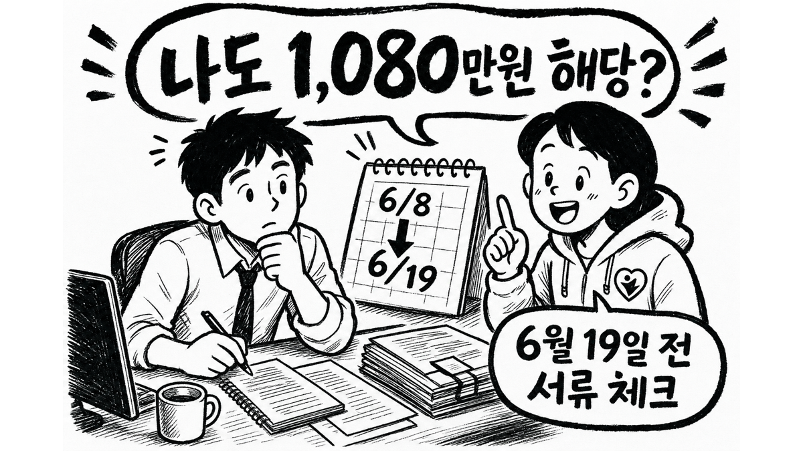
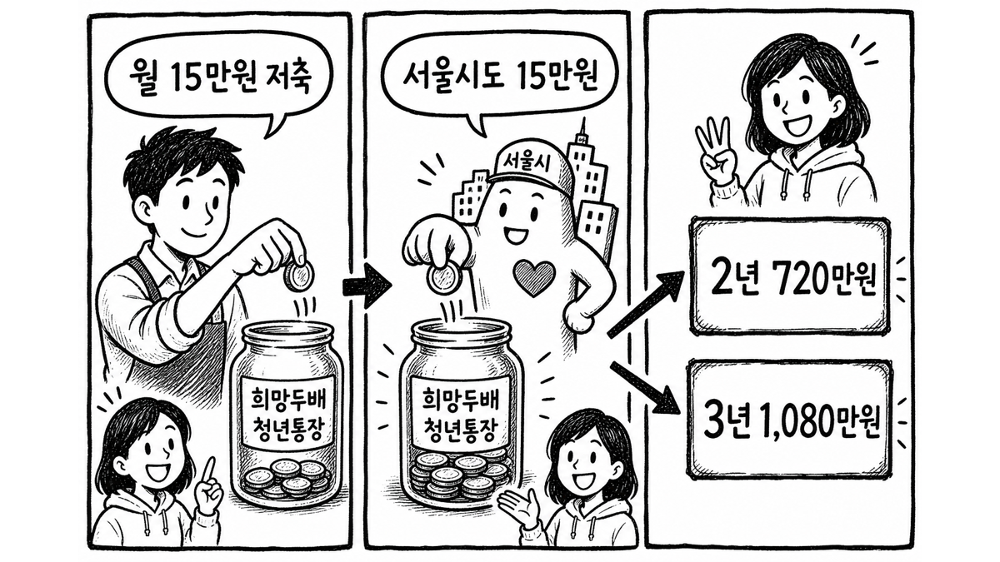
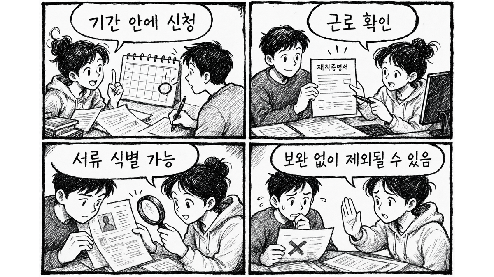

서울 희망두배 청년통장 2026년 모집 공고가 올라왔습니다.
이번 글은 신청을 대신해주는 글이 아닙니다. 내가 지금 서류를 봐야 하는지, 그리고 어디서 탈락하기 쉬운지만 먼저 정리한 글입니다.

5초 판정
가장 많이 보이는 숫자는 1,080만원입니다. 다만 이 숫자만 보고 바로 판단하면 조금 위험합니다.
공식 안내 기준으로는 본인이 매월 15만원을 저축하고, 서울시가 같은 금액을 매칭하는 구조입니다. 기간에 따라 2년은 720만원, 3년은 1,080만원으로 설명됩니다.

첫 번째는 기간입니다. 6월 19일 18시를 넘기면 신청기간 외 접수라 보기 어렵습니다.
두 번째는 근로 확인입니다. 재직증명서, 고용임금확인서, 급여이체 내역처럼 내 근로 상태를 설명하는 자료가 필요할 수 있습니다.
세 번째는 식별 불가 서류입니다. 흐릿한 파일, 이름이 빠진 캡처, 기간이 안 보이는 자료는 나중에 설명할 기회 없이 제외될 수 있다는 점이 제일 무섭습니다.

이 글은 선발 가능성을 보장하지 않습니다. 실제 신청은 공식 공고문과 신청 화면 기준으로 본인 조건을 확인해야 합니다.